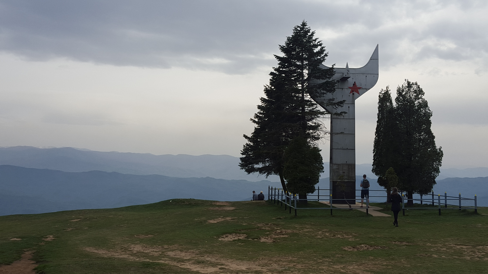

Smetovi

Smetovi is a mountain in Zenica. [1] The highest peak is at 1025 meters above sea level. It is about 8 kilometers
away from the center of Zenica. The picnic area is well known to the people of Zenica. It has beautiful landscapes which is
why it is a favorite of painters and photographers. A lot is arranged for recreationists. These are arranged paths
for walking, cycling, barbecue places, rest and more. Sports fields for basketball, football and beach volleyball,
mountain biking and hiking trails have been built. There is a sports and recreation center on the mountain. There
is a restaurant and accommodation on the plateau. There is also a trail for skiers and a ski lift for winter
conditions.At the top of Smetovi, a monument was erected to the fighters of the Zenica partisan detachment.
On it are the names of the fallen fighters and the verses of Izet Sarajlić: "And don't ask if they could have
returned, and don't ask if they could have gone back, while the horizon of their wishes burned for the last time,
red as communism." The monument was built in 1968. year, and on the metal structure were laid aluminum plates,
which disappeared during the war, which is why it now rusts. From Smetovi, in clear weather, visibility is up to
100 kilometers, so you can see the nearby mountains Zvijezda, Vranica, Vlašić, Busovačka staja, Lisac and others.